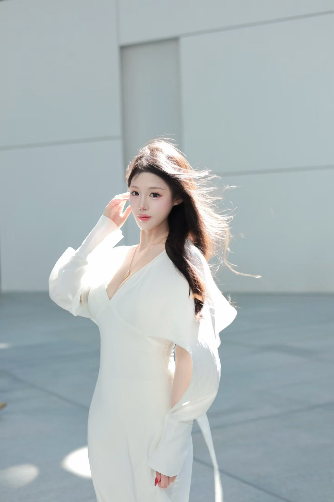
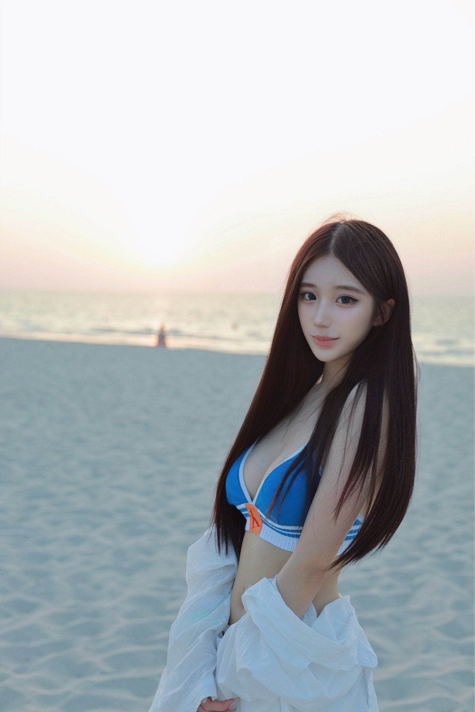

PRIVATE TRAVEL PORTRAITS / ABU DHABI
See the city.
Be in the story.
A private portrait session woven into your time in Abu Dhabi. Walk, explore and enjoy the city while I make photographs that feel like you.
English & Mandarin · Solo travellers, pairs and small groups
A FEW MOMENTS
Portraits with a sense of place.



THE EXPERIENCE
Easy to plan. Lovely to remember.
Tell me what you would like to see and how you want to feel in your photographs. I can suggest a route, guide you gently in front of the camera and work around the pace of your visit.
A route shaped around your plans
Natural camera portraits, with simple posing guidance
English or Mandarin, with session photos delivered within 24 hours
YOUR TIME IN ABU DHABI
Let’s make time for a portrait.
Share a few details to start the conversation. I’ll confirm availability, location access and the plan with you before a booking is made.
Admission and travel costs, if needed, are discussed in advance.
This opens a message with your selections; sending it does not reserve a date.
MEET YOUR PHOTOGRAPHER
Hello, I’m Xinyuan.
I’m a Chinese photographer based in Abu Dhabi. For five years, I’ve loved making travel portraits that bring people and their surroundings together. I’d be glad to help you feel at ease in the city and in front of the camera.
More about me